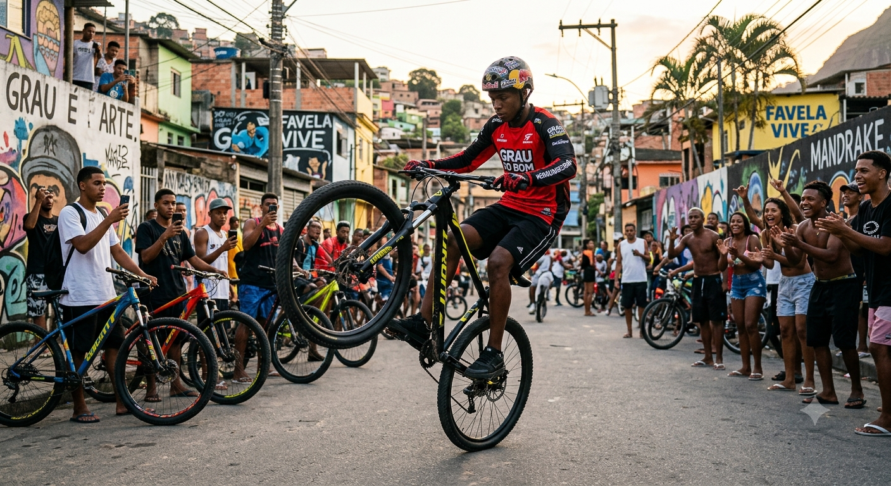

Grau de Bike
Por: Nome do Autor
Mais do que empinar, o grau é estilo de vida, equilíbrio e controle total da bike. Uma cultura que cresce a cada dia nas ruas e nas pistas.

Por: Nome do Autor
Mais do que empinar, o grau é estilo de vida, equilíbrio e controle total da bike. Uma cultura que cresce a cada dia nas ruas e nas pistas.
